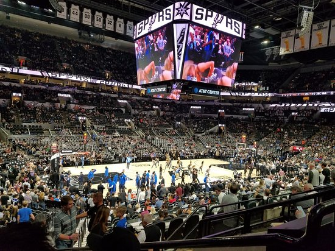

San Antonio Spurs - Fundada em 1967, a equipe é uma das mais bem-sucedidas da NBA, com 5 títulos da NBA (1999, 2003, 2005, 2007, 2014). Sob a liderança de figuras como Tim Duncan, Tony Parker e Manu Ginóbili, os Spurs se destacaram pelo seu jogo coletivo, baseado na defesa forte e no ataque eficiente, com a orientação do treinador Gregg Popovich. Com a chegada do prodígio Victor Wembanyama em 2023, a franquia busca um novo ciclo de sucesso.
Elenco - Victor Wembanyama (#1), Devin Vassell (#24), Keldon Johnson (#3), Jeremy Sochan (#10), Tre Jones (#33), Zach Collins (#23), Chris Paul (#3), Harrison Barnes (#30), Julian Champagnie (#30), Malaki Branham (#22).
Títulos NBA - 5 (1999, 2003, 2005, 2007, 2014)
Títulos Conferência - 6 (1999, 2003, 2005, 2007, 2013, 2014)
Estádio - Frost Bank Center (18.000)
